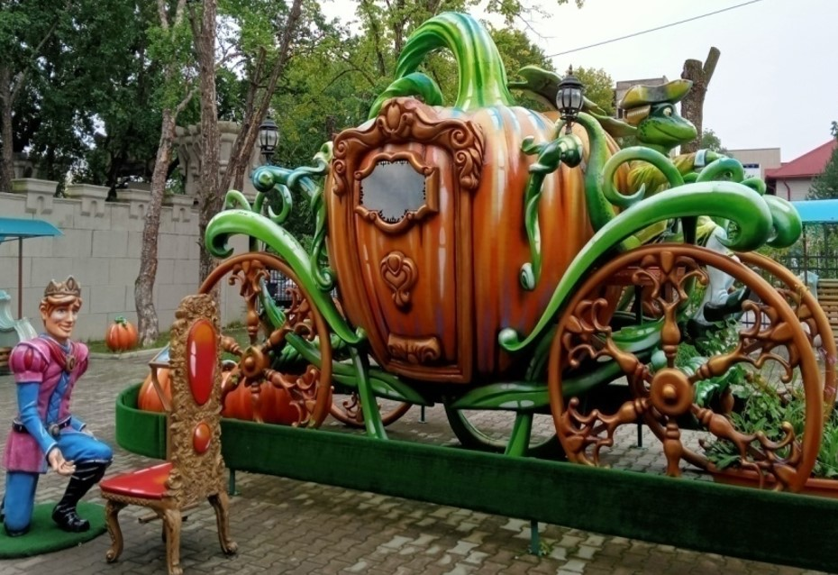
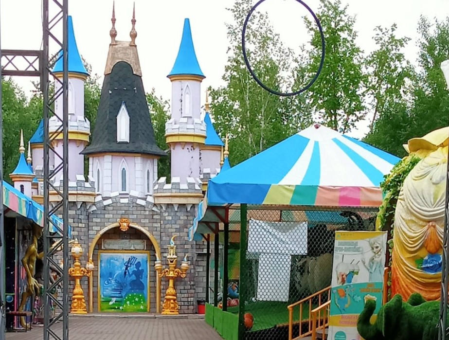

№
Задание
Ответ
Результат
1.1
У Золушки было всего 2 простенькие шляпки. Что бы украсить их она из лоскутков сделала три разных цветка. Сколько теперь будет у Золушки вариантов шляпок с цветком?
1.2
Мачеха перед балом задала Золушке выполнить много работы. Что бы выполнить 3/5 этой работы Золушке понадобиться 6 часов. За какое время Золушка выполнит всю работу?
1.3
Золушке высыпали 100 зерен пшена и 98 горошин. Какую часть от всех зерен составляют горошины?
1.4
Золушка приехала на бал во дворец, куда были приглашены дамы с кавалерами. Дам было на 16 больше. Сколько процентов составляли дамы, еcли кавалеров там было 24?
1.5
В замке Короля Ноля служило 1550 подданных. Поварят было на 630 человек больше, чем слуг, и в 2 раза больше чем советников. Сколько слуг в замке короля?
Карта

